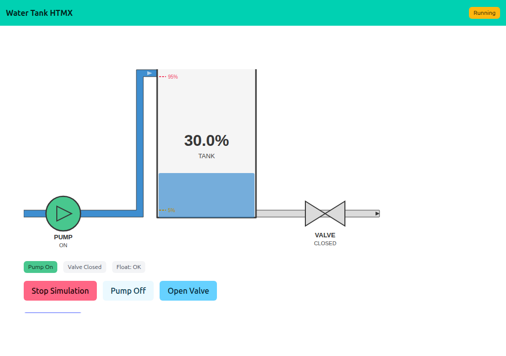
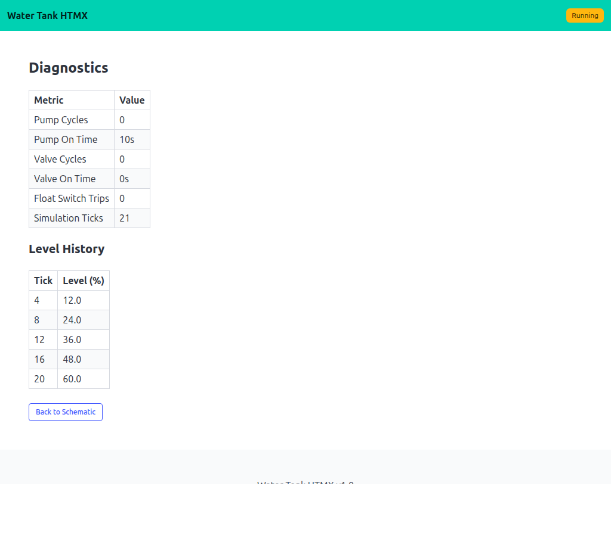

09 — Water Tank HTMX
The same multi-page tank as 08, upgraded from full-page Refresh polling to HTMX partial updates. Only the results div is swapped each second — forms, buttons, and any in-flight click are not interrupted. No App is needed; the example talks to a Controller directly.
Interactivity level: 5 — HTMX partial updates State scope: Global (server build) / Individual (WASM build)


hx-get="/fragment" hx-trigger="every 1s". The page chrome (navbar, buttons, forms) is stable; the schematic updates underneath.
The page + fragment pair
Each route has two endpoints: a full page that mounts the HTMX wiring, and a fragment endpoint that returns just the inner HTML.
GET / → full page, hx-get="/fragment"
GET /fragment → just the schematic HTML
GET /diagnostics → full page, hx-get="/fragment/diagnostics"
GET /fragment/diagnostics → just the diagnostics HTML
<div id="results"
hx-get="/fragment"
hx-trigger="every 1s"
hx-swap="innerHTML">
{{.results}}
</div>
The first render fills {{.results}} from the controller; HTMX takes over from there.
Concurrency: renderAndCapture
lofigui.Print, Reset, and Buffer all touch a shared global. Multiple HTMX clients hitting /fragment concurrently would interleave their writes. A small mutex around reset+render+capture keeps each request's output isolated:
var renderMu sync.Mutex
func renderAndCapture(fn func()) string {
renderMu.Lock(); defer renderMu.Unlock()
lofigui.Reset()
fn()
return lofigui.Buffer()
}
Each fragment endpoint calls renderAndCapture(func() { renderSchematic(sim) }) and writes the captured string to the response.
Running
task go-example:09 # server on :1349
task docs:capture:09 # capture the two screenshots above